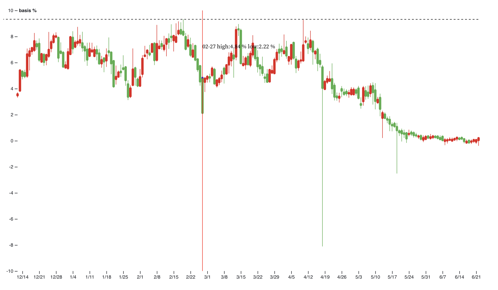

Chapter 6 Interactive component
6.1 d3 interactive graph: https://observablehq.com/@boquansun/d3-candlestick-chart
The above candlestick chart for basis is a very significant part in our trading strategy. For one thing, though we have analyzed several relative features and indexs to indicate when we should open a position and close a position, we need to have some intuition for the absolute basis value at least we know what basis value is a relatively high level and a relatively low level. For another, some prominent points with extreme values need to be noticed. Therefore, our interactive graph can make it when our mouse move on some points we are interested it can show the precise low and high value on the date. I want to declare that these extreme values are so important because they dominate our maximum drawdown and maximum profit.

For example, there is a basis candlestick graph, if we open a position at early time, what is the most concerned is when we close the position and whether our position will be liquidated. There are several extreme values in March, April and May due to the market changes. It gives us a good fact that basis can become very low when the crypto market slumps but it will not increase dramatically when the market jumps. So going short basis can make us have a stable profit.